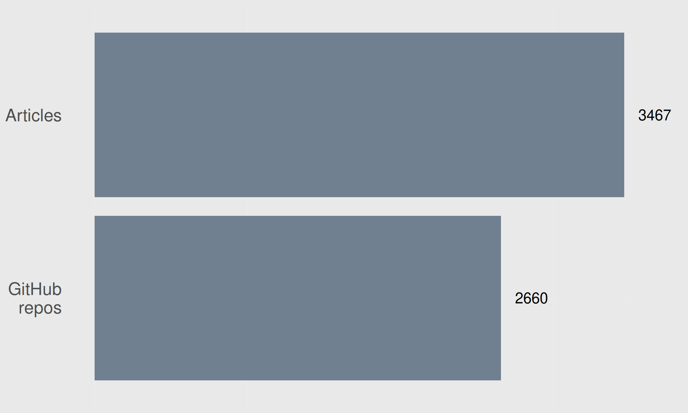
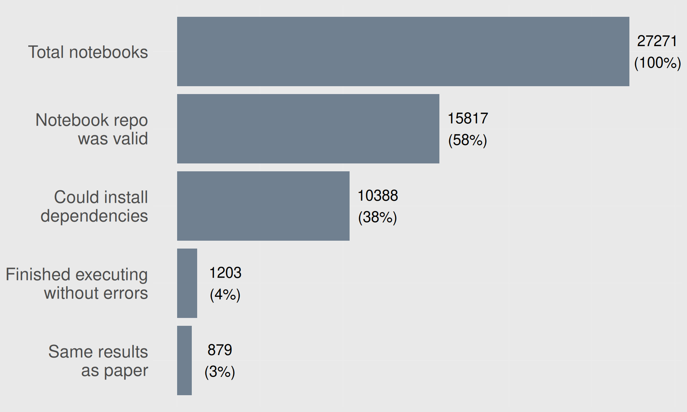

September 25, 2025
MSc and PhD in Nutritional Science in Toronto, Canada
(Previous) Research in diabetes epidemiology
Team leader at SDCA for the Seedcase Project, an NNF funded software project to simplify building FAIR data
ukbAid: R package and website
DARTER Project: Website of application to and documentation on a DST project
Validity of results
Speed impacts time to results
Ability to do more complex analysis with more data
Resources (which cost money)
Highlight issues with Denmark Statistics and the research using the registers (and any other large data)
Spread awareness of how critical programming skills are, especially for large data
Showcase a few tools for doing research faster, so you can focus on doing science
Issues with DST
Need for dedicated programming expertise
Questionable reproducibility and validity
No queue system for analyses
Can crash your analysis if others use more memory
For example, BEF register:
Takes many minutes to load one year of data (in R)
Can you see the issue?
Variables are not consistent across years
Finding the metadata is difficult
Most data formats are row-based, like CSV or SAS. Newer formats tend to be column-based like Parquet.
| File type | Size (MB) |
|---|---|
SAS (.sas7bdat) |
1.45 Gb |
CSV (.csv) |
~90% of SAS |
Stata (.dta) |
745 Mb |
Parquet (.parquet) |
398 Mb |
Faster than almost all other tools
Relatively complex queries (joins, group by, aggregates) on 55 Gb takes < 7.5 min 1
Generally, simpler queries take < 10 seconds for massive datasets
Easily connects with Parquet datasets
Takes < 6 seconds
Reproducibility: same data + same code = same results?


With massive data, you really need to know how to code and programming
But, researchers are not trained for this kind of skill
“But the code runs!”
Hard to review code
Hard to collaborate
No version control
Use proprietary data formats
No queue system
No training materials or courses
Licensed under CC-BY 4.0.
Slides at slides.lwjohnst.com